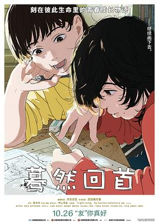

蓦然回首 / ルックバック
又名：Look Back -蓦然回首-(港) / Look Back
「26th SIFF」很有摄影电影的感觉。当藤野站在门口时身后是一扇填满黑色的窗，但是嘈杂的思绪繁浩的黑色。开门后，门里头没了另一种结局的幻想，仅剩宛如月光般的泪水。我总是想到京都纵火案没有发生还是多好，可是蓦然回首，只剩一件羽衣空空落落地挂着。押山老师这次真是极力还原原著，再加上小剧场创新的演绎，真是不枉我难得参加一次电影节。
作品信息
| 导演 | 押山清高 |
| 编剧 | 押山清高 |
| 主演 | 河合优实 / 吉田美月喜 |
| 类型 | 剧情 / 动画 |
| 制片国家/地区 | 日本 |
| 语言 | 日语 |
| 上映日期 | 2024-10-26(中国大陆) / 2024-06-10(安纳西国际动画电影节) / 2024-06-14(上海国际电影节) / 2024-06-28(日本) |
| 片长 | 75分钟(中国大陆) / 58分钟 |
| IMDb | tt31711040 |
说过什么
2024-06-21 01:08:18
广播 · 看过 · ★★★★★
「26th SIFF」很有摄影电影的感觉。当藤野站在门口时身后是一扇填满黑色的窗，但是嘈杂的思绪繁浩的黑色。开门后，门里头没了另一种结局的幻想，仅剩宛如月光般的泪水。我总是想到京都纵火案没有发生还是多好，可是蓦然回首，只剩一件羽衣空空落落地挂着。押山老师这次真是极力还原原著，再加上小剧场创新的演绎，真是不枉我难得参加一次电影节。
2024-06-14 08:44:58
广播 · 想看
最后一次看到是 2026-10-07T23:13:46+08:00 · 豆瓣原页